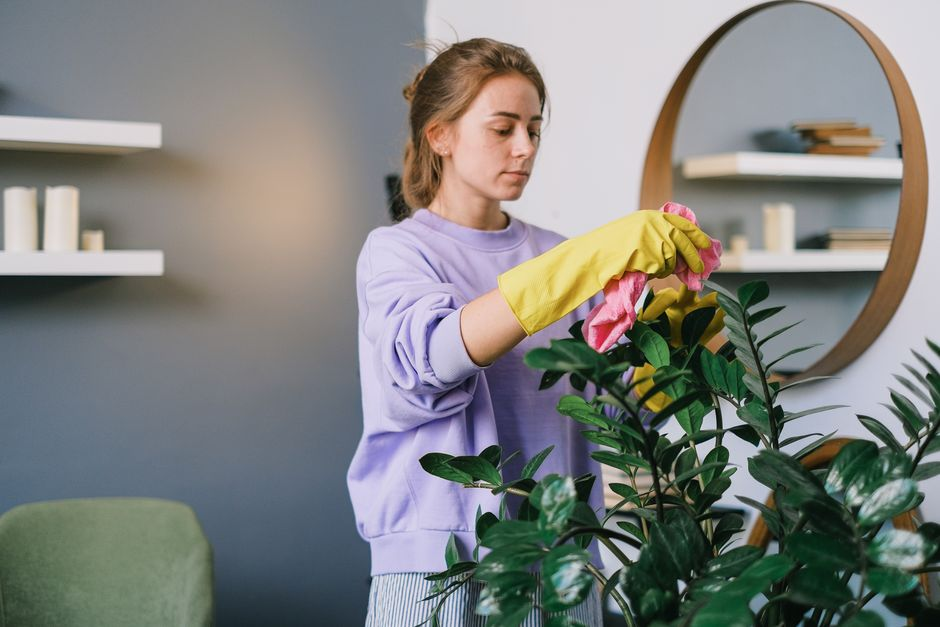

Comment nettoyer et polir votre plantarium pour maintenir sa beauté
Nettoyer et polir votre plantarium : un guide pratique pour maintenir sa beauté
Introduction
Pour bien débuter dans le monde fascinant des plantariums, vous devez comprendre que leur entretien est une étape cruciale. Un plantarium bien entretenu ne seulement garde son esthétisme, mais favorise aussi la santé de vos plantes. Dans cet article, nous allons vous montrer comment nettoyer et polir votre plantarium pour qu'il reste toujours impeccable.
Nettoyage des vitres

Photo: SHVETS production / Pexels
La première étape dans l'entretien de votre plantarium est de nettoyer ses vitres. Les vitres sales peuvent réduire l'éclairage naturel et affecter la croissance de vos plantes. Pour nettoyer les vitres, vous n'avez besoin que de quelques ingrédients simples : un chiffon doux, de l'eau distillée, et de l'alcool isopropylique à 90%.
- Préparez un solution nettoyante : Mélangez 1 tasse d'eau distillée avec 10 gouttes d'alcool isopropylique. Utilisez ce mélange pour humidifier votre chiffon.
- Nettoyez délicatement : Faites des mouvements de va-et-vient sur la vitre, en commençant par le haut et en travaillant vers le bas. Évitez de gratter la surface pour ne pas laisser de rayures.
- Laissez sécher : Laissez les vitres sécher naturellement. Vous pouvez accélérer le processus en les essuyant doucement avec un chiffon propre.
Polissage des surfaces
La polissure des surfaces de votre plantarium ajoute non seulement un aspect esthétique, mais aussi une touche de fraîcheur à votre décor. Vous pouvez utiliser un ponçage léger pour les surfaces en bois ou en verre. Cependant, assurez-vous d'utiliser des matériaux adaptés pour ne pas endommager la surface.
- Utilisez une ponceuse fine : Choisissez une ponceuse à grain 120 à 220 pour les surfaces en bois. Pour le verre, utilisez un papier de verre fin.
- Poncez doucement : Commencez par un mouvement circulaire, en portant des gants pour une sécurité accrue. Ne poncez pas trop fort pour ne pas endommager la surface.
- Nettoyez après l'utilisation : Après le ponçage, nettoyez immédiatement les particules de bois ou de verre avec un chiffon humide.
Nettoyage des plantes
La propreté des plantes est également un facteur clé pour maintenir le charme de votre plantarium. Régulièrement, inspectez vos plantes et retirez les feuilles mortes ou décolorées.
- Nettoyez les feuilles : Utilisez un coton-tige imbibé d'eau distillée pour nettoyer les feuilles de vos plantes. Cela les rend plus jolies et favorise la résistance aux maladies.
- Régulier : Faites cela tous les 1 à 2 mois.
Nettoyage du sol
Le sol de votre plantarium peut accumuler des débris et des résidus minéraux, ce qui peut affecter la croissance des plantes. Nettoyez le sol à l'aide d'un aspirateur à main.
- Nettoyez le sol tous les 3 mois : Utilisez un aspirateur à main pour souffler le sol, ou si nécessaire, retirez-le doucement et nettoyez-le à l'eau claire.
- Régularité : Cela vous permettra de retirer les débris sans endommager les racines.
Exemple de nettoyage d'un plantarium
Imaginez que votre plantarium contient des plantes à feuilles vertes et des orchidées. Vous décidez de nettoyer votre plantarium tous les 2 mois. Voici comment procéder :
- Lundi : Nettoyage des vitres - Utilisez le mélange d'eau distillée et d'alcool isopropylique pour nettoyer les vitres.
- Mardi : Polissage du verre - Poncez le verre avec un papier de verre de 220.
- Mercredi : Nettoyage des plantes - Utilisez un coton-tige pour nettoyer les feuilles des plantes et retirez les feuilles mortes.
- Jeudi : Nettoyage du sol - Aspirer le sol et nettoyer à l'eau claire si nécessaire.
- Vendredi : Inspection finale - Vérifiez l'état global du plantarium pour vous assurer qu'il est impeccable.
Conclusion
En suivant ces étapes précises et régulières, vous pouvez maintenir votre plantarium dans un état impeccable. Ne vous inquiétez pas si vous ne pouvez pas tout faire en une seule fois : le but est de créer un rituel d'entretien qui devient une routine naturelle. Votre plantarium vous remerciera et vous offrira un environnement propice à la croissance de vos plantes.
Produits recommandés
En tant que Partenaire Amazon, je réalise un bénéfice sur les achats remplissant les conditions requises.